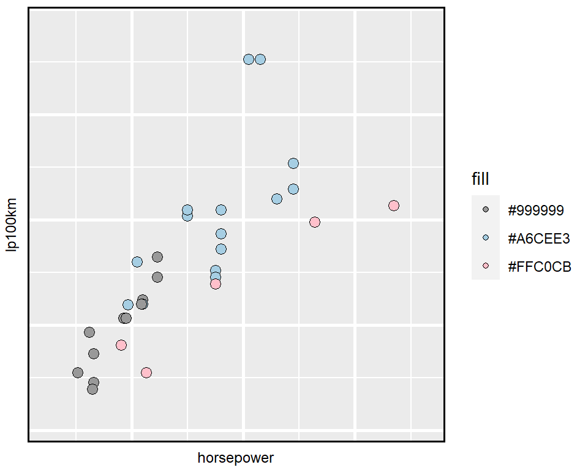
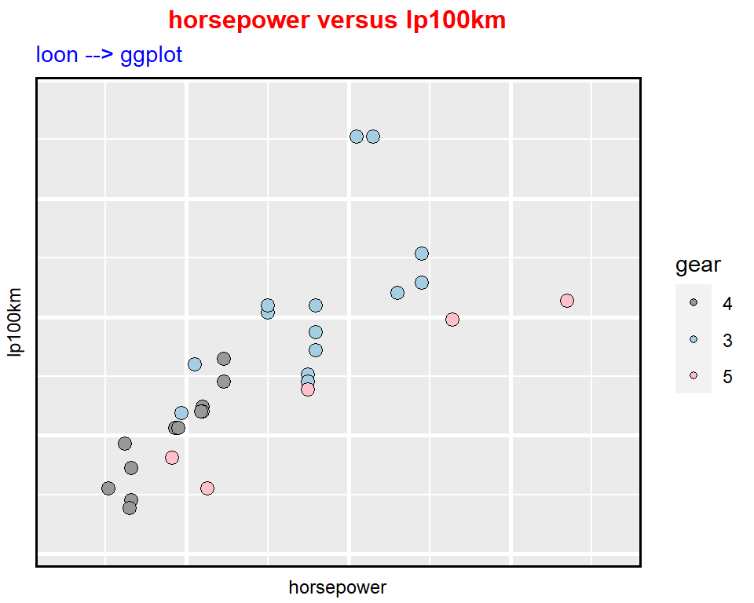
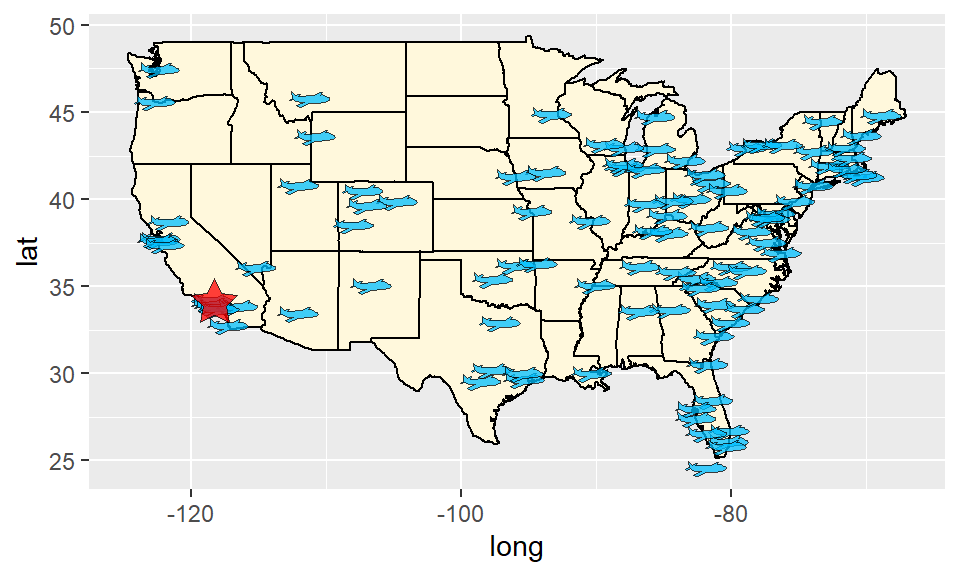
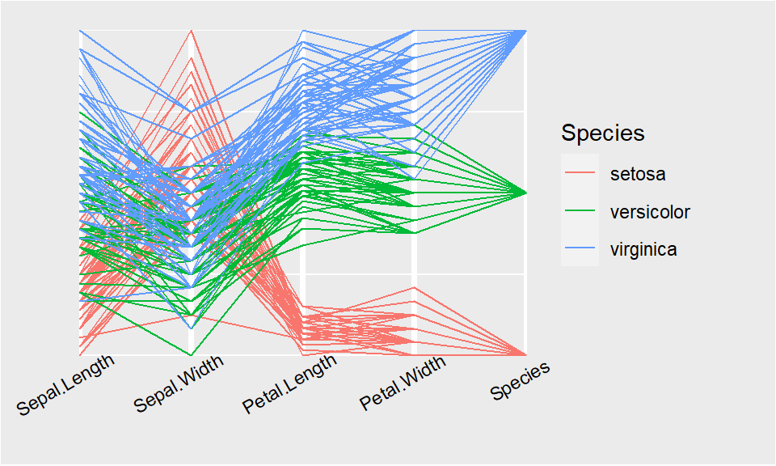

loon plots –> ggplots
Wayne Oldford and Zehao Xu
2020-05-26
loon2ggplots.RmdPackage loon provides the truly direct manipulation and package ggplot provides a unified data structure so that it is easy to be extended. Data analysts who explore data interactively can at any time turn a snapshot of their interactive loon plots into ggplots by the simple translation function loon2ggplot().
In loon, the current view of any loon plot p can be turned into a grid plot in a variety of ways:
plot(p)-
grid.loon(p)orgrid.loon(p, draw = FALSE) -
loonGrob(p)to create the grid object.
The corresponding grid object is a rich structure that can be exported, printed, edited, and incorporated into other grid structures. However, adapting that structure to slightly different presentations is a bit of a challenge compared to a ggplot (also ultimately a grid structure).
In this section, we turn the current state of any loon plot into a ggplot plot which can then be modified following the rules of the ggplot2 grammar.
loon2ggplot()
Basic
Plot the cars ‘horsepower’ versus ‘lp100km’ (100 km per liter) on data mtcars.
library(dplyr)
library(loon)
mt <- mtcars %>%
rename(transmission = am, weight = wt, horsepower = hp) %>%
mutate(lp100km = (100 * 3.785411784) / (1.609344 * mpg))
p <- mt %>%
with(
l_plot(horsepower, lp100km,
color = gear)
)Turn p (a loon plot) to a ggplot object via a simple function loon2ggplot().

The object g1 is a ggplot graphic. Comparing with the original loon widget, the gg one provides a legend that is helpful to decode the mapping systems. However, since loon widgets do not store the original data information, the labels of each legend are the hex-codes of the color. To better convey the graphics from aesthetics to data, we can edit the legend with more reasonable labels and add titles on top to emphasize the variables.
g1 +
scale_fill_manual(values = c("#999999", "#A6CEE3", "#FFC0CB"),
name = "gear",
labels = c("4", "3", "5")) +
ggtitle(label = "horsepower versus lp100km",
subtitle = "loon --> ggplot") +
theme(
plot.title = element_text(color = "red", size = 12, face = "bold"),
plot.subtitle = element_text(color = "blue")
)
Comparing with static grid (via loonGrob()), modification of ggplot (via loon2ggplot) is simpler and more creative. Moreover, ggplot has over 100 extended packages. After transforming from loon to ggplot, users can continually take advantage of these extensions.
Turn a l_compound widget to a ggmatrix object
Considering the following loon pairs plot (an l_compound widget) with three variables ‘lp100km’ (100 km per liter), ‘weight’ (car weight) and transmission (automatic or manual).
library(loon)
mt %>%
select(lp100km, weight, transmission) %>%
# and pass the built plot on
l_pairs(showHistograms = TRUE,
linkingGroup = "Motor Trend 1974") -> # and assign the result.
l_ppIt produces an interactive pairs plot with histograms on the margins (see ?l_pairs) and assigns the result to l_pp (which could have been assigned at the beginning with <- as well). Now, turn this pair plot to a gg object. Note that the compound loon widget like l_pairs (the shown one), l_ts or l_facet, etc, are created by GGally::ggmatrix. Features like theme, labels can be piped through but by ggmatrix rule.

The object g2 is a ggmatrix graphic. We can fit a smooth line on the lp100km vs weight scatterplot and draw a density curve on the weight histogram. Additionally, the theme of these plots are adjusted to theme_light to direct more attention towards the data.
# Add a smooth line on g[2,2]
# the index of `lp100km vs weight` scatterplot is
# 1 * 4 + 2
g2$plots[[6]] <- g2$plots[[6]] + geom_smooth()
# Add a density curve on g[1,2]
# the index of `weight` histogram is
# 1 * 4 + 1
g2$plots[[5]] <- g2$plots[[5]] + geom_density()
# Modify theme
g2 <- g2 + theme_light()
g2
Note that: The single ggplot object can be extracted by ...$plots[[id]], where id is the index of such object. To M[x, y], \(id = (y-1) \times nrow + x\), \(nrow\) is the number of rows.
Geom layers
- Adding glyphs on scatterplot
Package loon.ggplot also provides “pointGlyph” layer to create scatterplots with a variety of glyphs, such as polygon glyph, serialaxes glyph, image glyph and etc. Following example illustrates the USA destinations (not including Alaska and Hawaii) of “nyc” flights in 2013. All destinations are marked as a “airplane” polygon symbol and LA is highlighted by a magenta star.
library(nycflights13)
library(dplyr)
destinations <- nycflights13::airports %>%
dplyr::rename(dest = faa) %>%
dplyr::semi_join(nycflights13::flights, by = "dest") %>%
dplyr::filter(lon > -151,
lat < 55)
LA <- data.frame(
lon = -118.243683,
lat = 34.052235
)
map_data("state") %>%
ggplot(aes(long, lat, group = group)) +
geom_polygon(color="black", fill="cornsilk") +
geom_polygonGlyph(data = destinations,
mapping = aes(x = lon, y = lat),
inherit.aes = FALSE,
polygon_x = x_airplane,
polygon_y = y_airplane,
size = 2,
alpha = 0.75,
fill = "deepskyblue") +
geom_polygonGlyph(data = LA,
mapping = aes(x = lon, y = lat),
inherit.aes = FALSE,
polygon_x = x_star,
polygon_y = y_star,
alpha = 0.75,
fill = "red")
-
Providing serial axes plots (parallel coordinate or radial coordinate) via
ggSerialAxes()# parallel axes plot ggplot(data = iris, mapping = aes(colour = Species)) %>% ggSerialAxes(layout = "parallel") + theme(axis.text.x = element_text(angle = 30, hjust = 0.7))
Note that we use
%>%to pipe through theggplot()object instead of the original+.
Function loon.ggplot()
loon.ggplot() function in loon.ggplot package is a S3 method and gathers features of both loon2ggplot() and ggplot2loon(). It can take either a loon widget or gg object and transform back and forth.
- Loon to ggplot:
loon.ggplot(loon)is equivalent toloon2ggplot(loon).